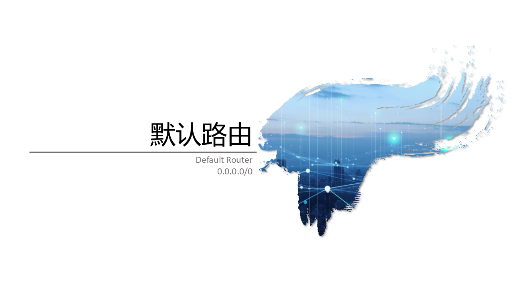
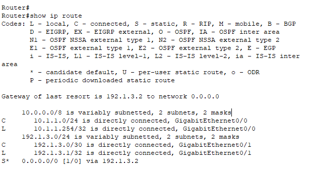
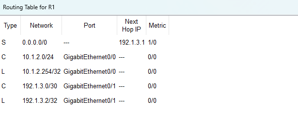
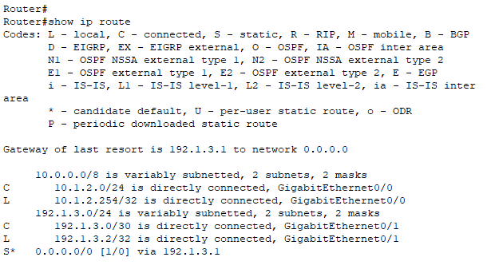
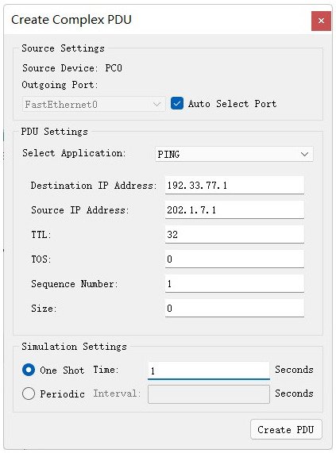

默认路由
@Default Route
- 默认路由是构建网络互联的基础
- 一种特殊的静态路由
- 匹配所有未知目标网络
0.0.0.0/0 NEXT-HOP
- 即当数据包的目的IP地址无法匹配路由表中的任何其他路由条目时，路由器就会使用默认路由来转发该数据包
- 如果没有指定，则丢弃报文
- 最后选择；兜底方案 - 通往世界的最后一跳
- 匹配优先级最低
- 默认路由监视工具 查看是第一条，CLI查看是最后一条

默认路由 R0 - CLI 
默认路由 R0 - 监视工具 - 应用 Application
- 接入互联网
最常见的用途。在企业或家庭网络中，路由器通过配置一条指向ISP网关的默认路由，将所有去往互联网的流量发送出去
- 简化路由配置
某个IP分组的目的IP地址和路由表中的所有路由项都不匹配 - 没有匹配
路由器通往的多个网络有相同的下一跳，但无法聚合路由 - 大杂烩
- 作为动态路由协议的补充
即使运行了OSPF、BGP等动态路由协议，也常常需要配置默认路由来指向外部网络
- 特点 Feature
- 优先级最低
- 配置不当可能导致分组无限循环直到TTL耗尽
- 应认真仔细检查、配置路由
没有它，每个路由器都需要知道互联网上每一个网络的精确路径，这在现实中是不可行的
它极大地简化了路由表的管理，使得网络能够高效地将“未知”流量导向正确的方向
| 静态路由 | 默认路由 | |
|---|---|---|
| 匹配范围 | 特定网络 | 所有网络 |
| 配置方式 | 人工 | 人工 |
| 类型标识 | 路由表中显示为 S(Static) | 同样显示为 S* 或 S 0.0.0.0/0 |
| 优先级 | 比动态路由高，但低于直连路由 | 是最后的兜底，优先级最低 |
实操 Drill
- 搭建拓扑、根据分配地址完成配置
- 配置静态路由
R0
Router(config)# ip route 0.0.0.0 0.0.0.0 192.1.3.2
R1
Router(config)# ip route 0.0.0.0 0.0.0.0 192.1.3.1
- 配置完成后的路由表；R0的路由表见前图
- 验证 Verify
- 分别使用以下方法验证网络连通性
- 使用 PING 验证
- 发送简单数据包或定制数据分组
在模拟通信模式下，由PC0发送一个不匹配任何路由的PDU
TLL不要指定太大，使用5-10即可查看默认路由转发完整过程
R0匹配不到具体的路由项，则由默认路由转发给R1，每次转发TTL都减1
R1匹配不到具体的路由项，则由默认路由转发给R0，每次转发TTL都减1
当TTL时间为0时，数据包被丢弃
查看数据分组在两个路由器之间的转发过程
- 思考 Thinking
- 如何优化网络设计，合理使用默认路由？
[] 默认路由配置 点击下载PT文件



